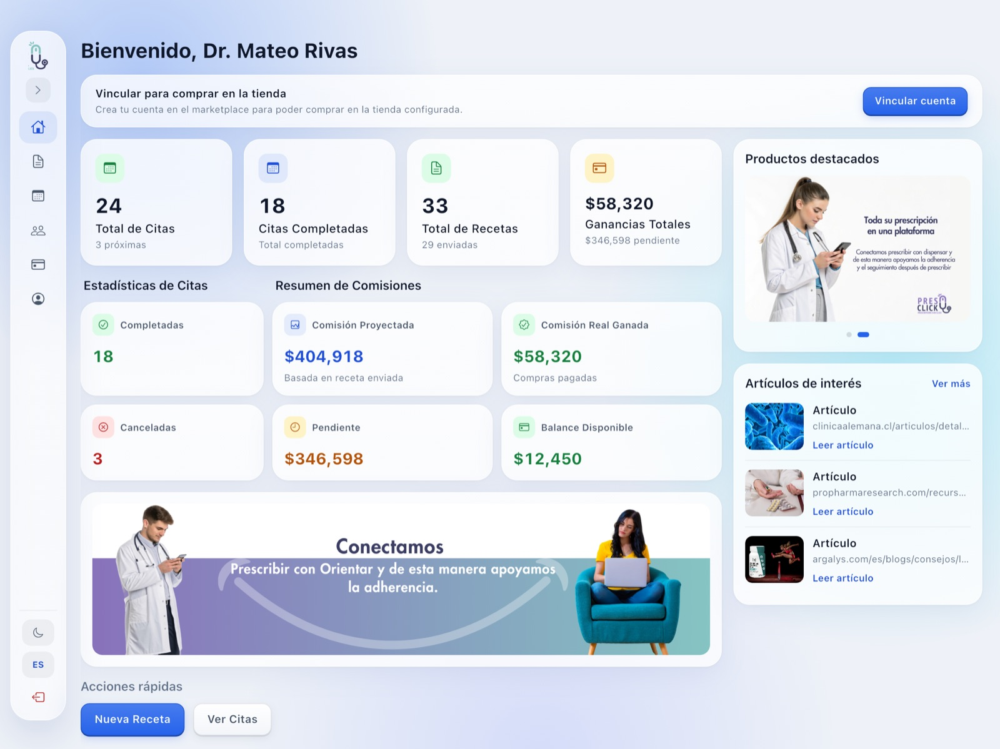
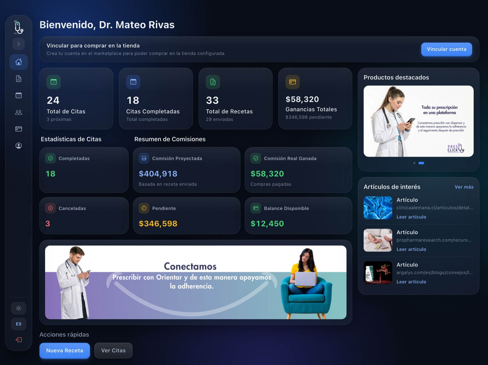
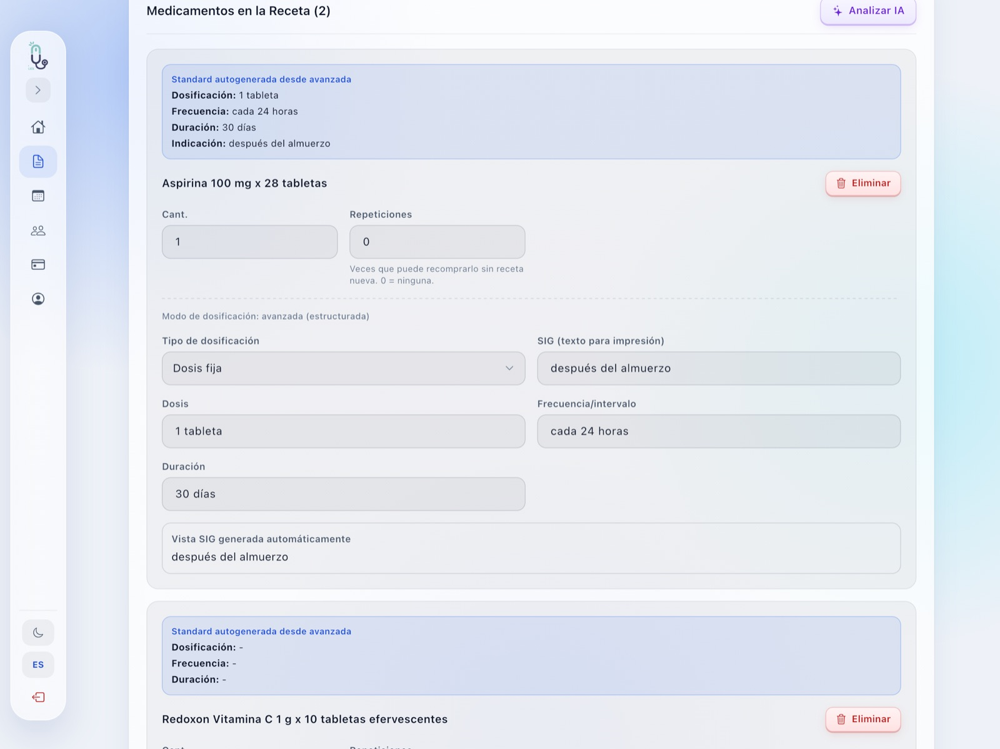
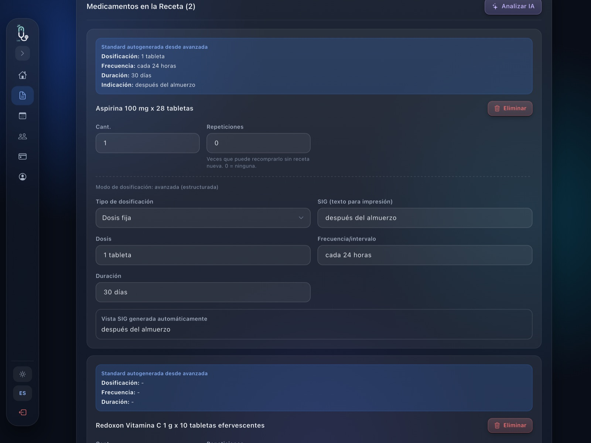

Prescribir, a un toque de distancia.
PresClick ya funciona en la tablet. Esta propuesta lleva lo esencial al teléfono del médico: crear una receta en tres pasos, revisar las que ya envió y ver sus cifras, con una mano y en pocos toques.
El teléfono no es una tablet pequeña
En la tablet el médico tiene todo a la vista y trabaja sentado. El teléfono se usa de pie, con una mano y entre una consulta y otra. Por eso la versión móvil cambia el orden de las cosas: lo que más se usa queda primero y a la altura del pulgar.
Recetas tiene su pestaña, y el botón más grande de la app es «Nueva prescripción».
La receta se arma en tres pantallas cortas. El botón para seguir siempre está a la vista.
La barra de secciones, los botones principales y las opciones viven en la mitad de abajo.
Paciente, dosis, frecuencia y duración se eligen con un toque. El teclado aparece solo cuando hace falta.
El médico entra con su usuario y su Face ID de siempre. Ve los mismos pacientes y recetas que en la tablet y en la web.
Las cifras que importan, sin saturar la pantalla
Arriba, la bienvenida con el nombre del médico. Debajo, el total de recetas y las ganancias totales. Después, el resumen de comisiones con sus cuatro datos, cada uno en su tarjeta. Al final, el banner «Conectamos».
Las tarjetas se acomodan solas
Cada cifra se muestra completa y a su tamaño. Si las dos cifras de una fila caben, van lado a lado. Si una no cabe, esa fila pasa a una tarjeta por línea. La letra nunca se achica y ningún número se corta.
En el prototipo del final se puede probar con el botón «Grandes».
Lo que sale del Dashboard en el teléfono
- Estadísticas de citas: Citas tiene su propia pestaña.
- Acciones rápidas: «Nueva prescripción» vive en Recetas.
- Accesos a la tienda, productos destacados y artículos. Siguen en la tablet y en la web.
La pantalla principal
Es la pestaña que más se usa. Arriba, el botón más importante de la app: «Nueva prescripción». Debajo, «Buscar paciente» para ver todo lo que se le ha recetado a una persona, y las últimas recetas, de la más nueva a la más antigua.
Una receta en tres pasos
Así se hace la receta más común desde el teléfono: un paciente que ya está registrado y un medicamento. Los círculos naranjas 1 marcan cada toque.
Paciente
Al tocar «Nueva prescripción» se abre directamente el buscador de pacientes, porque en el teléfono casi siempre se receta a alguien que ya está registrado. Al elegirlo, sus datos se completan solos y la app pasa a los medicamentos. Si es alguien nuevo, «Paciente sin registrar» abre el formulario.
Medicamentos
El catálogo muestra cada producto con su precio y dos botones: «Detalles» y «Agregar». «Agregar» abre una hoja para indicar cantidad, dosis, frecuencia y duración antes de sumarlo a la receta. Así ningún medicamento entra sin sus indicaciones.
Finalizar
Un resumen de toda la receta, una nota opcional, los documentos de la galería que se quieran incluir y la opción de enviarla al paciente en ese momento. Un toque más y la receta queda creada.
Por qué este orden funciona mejor en el teléfono
- En la tablet, la dosis se completa debajo del catálogo, después de agregar el medicamento. En el teléfono esa parte quedaría fuera de la pantalla y sería fácil olvidarla. Aquí se indica en el momento de agregar.
- Cada paso cabe en una pantalla, así que el botón para seguir siempre está a la vista.
- Antes de crearla, el médico ve la receta completa y puede volver a cualquier paso.
- Si cierra por error, la app pregunta antes de descartar lo que lleva.
Después de crearla: enviar, compartir y revisar
«Ver todas» abre la lista completa con buscador. Cada receta muestra al paciente, su estado y el monto, con la acción más útil a la vista: «Enviar» si es un borrador y «Enviar enlace» si ya salió. Las demás acciones quedan en el botón •••.
Citas, pacientes, billetera y perfil, a dos toques
Las demás secciones de la tablet siguen en el teléfono, ordenadas para leerse en vertical.
La misma app, a la medida de cada momento
A la izquierda, capturas de la app de tablet que ya existe. A la derecha, la misma pantalla en el teléfono. La tablet no cambia: el teléfono la complementa.


En la tablet, el Dashboard reúne diez bloques: citas, recetas, comisiones, tienda, productos, artículos y acciones rápidas.
En el teléfono quedan las cifras clave y el banner.
En la tablet, cada receta muestra todas sus acciones en una fila.
En el teléfono, crear y buscar van primero, y cada receta abre su detalle.


En la tablet, la dosis de cada medicamento se llena debajo del catálogo, después de agregarlo.
En el teléfono, la dosis se elige en una hoja antes de agregarlo.
Pruébelo usted mismo
Este teléfono funciona. Con los datos de prueba se puede crear una receta completa y ver cuántos toques hacen falta.
Recorrido sugerido
- Toque Recetas en la barra y luego Nueva prescripción.
- Elija a Laura Gómez.
- Toque Agregar en un medicamento.
- Elija dosis, frecuencia y duración, y toque Agregar a la receta.
- Toque Continuar y luego Crear receta.
Pacientes, medicamentos y cifras son datos de prueba.
Lo que gana el médico
En el pasillo, entre consultas o en casa, en tres pasos y unos pocos toques.
La dosis se indica al agregar cada medicamento, y la receta se revisa completa antes de crearla.
Las mismas secciones, la misma cuenta y la misma información que ya usa en la tablet.
Cómo lo hacemos realidad
- Aprobación de esta propuesta. Con sus comentarios se cierran los detalles de cada pantalla.
- Primera entrega: Recetas y Nueva prescripción, el corazón de la app.
- Segunda entrega: Dashboard, Citas, Pacientes, Billetera y Perfil.
- Pruebas con médicos y publicación en App Store y Google Play.
La versión móvil se construye sobre la app que ya existe. Es una sola app: en la tablet se sigue viendo como hoy, y en el teléfono se ve como en esta propuesta.